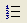

Changing Text Paragraph Properties |
Text paragraph properties are determined by the defaults for the "Normal" style. Any paragraph properties that you change override the Normal style for that text region.
To change the properties for one or more paragraphs within a text region:
Click in a paragraph or drag-select multiple paragraphs within a region.
Choose Paragraph from the Format menu.
Make the appropriate changes in the Paragraph Format dialog.
Using the Paragraph Format dialog you can set the left or right indent for every line. You can also indent the first line of a paragraph a different amount by selecting either "Hanging" or "First Line" then entering a value below.
You can also set indents by using the text ruler.
Click in a paragraph and choose Ruler from the View menu.
Move both left arrows on the ruler to the indent all lines in the paragraph.
Move just the top or bottom arrow to set a different indent for the first line.
To indent the right edge of your text, move the right arrow.
To align the paragraph at either the left or right edge or to center text within the text region, use the three alignment buttons in the Paragraph Format dialog.
Alternatively, use the three alignment buttons on the far right of the Formatting toolbar.
You can apply the consecutive numbers 1,2,3, and so on, or bullets to paragraphs within text regions. Select "Bullets" or "Numbers" from the "Bullets" drop-down list in the Paragraph Format dialog.
Alternatively, first select the paragraphs, then click on the numbers  or bullets button on the Formatting toolbar.
Click the "Tabs" button within the Paragraph Format dialog to open the Tab dialog.
Enter numbers into the "Tab stop position" text box; the measurement system used is displayed below the text box.
Click the "Set" after each tab stop. The number should then appear in the box below.
To remove a tab stop, select the tab stop you want to remove in the Tabs dialog, and click "Clear."
You can also set, view, and move tab stops using the Text Ruler.
Click in a paragraph and choose Ruler from the View menu.
Click in the ruler where you want each tab stop to be. You can move or remove the tab stops by clicking on them and dragging.
A paragraph begins at the start of a text region until the [Enter] key is pressed.
To insert a new line within the same paragraph, press [Shift] [Enter].